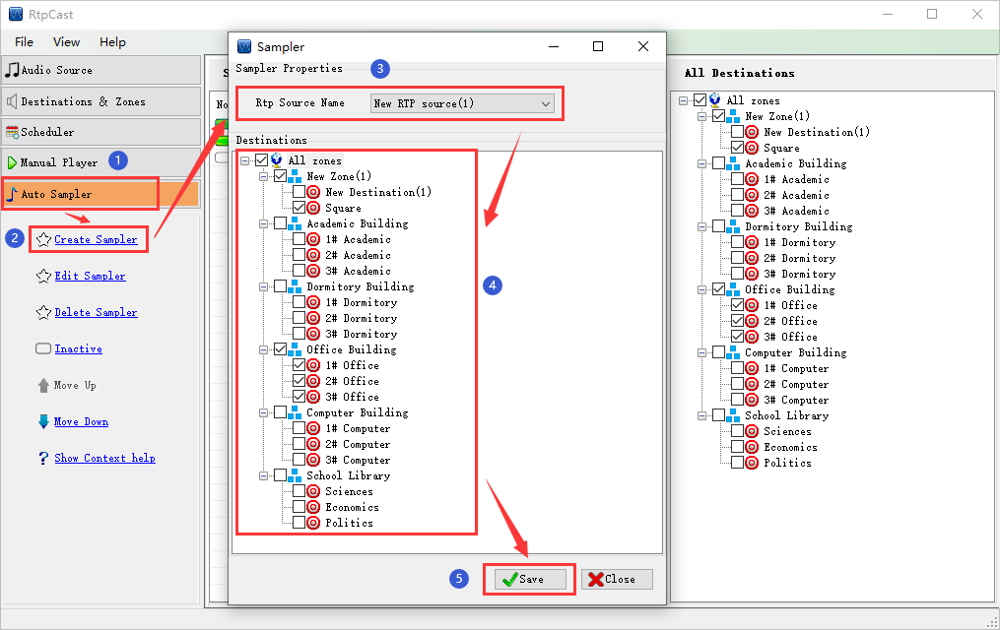

|  |
|
Introduction |
|
Sampler is a task which is created to listen the audio stream of a specific "RTP sources", and transplate data to the destination. |
|
Operation |
| (1) Click [Create Sampler] in the left navigation panel, select the "RTP sources" item in the editing window, and then check the specified zone or destination in the "Destinations" area on the middle window. |
| (2) Click [Save] to save the configuration content. |